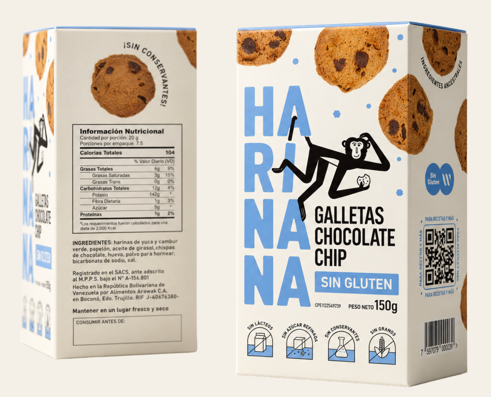
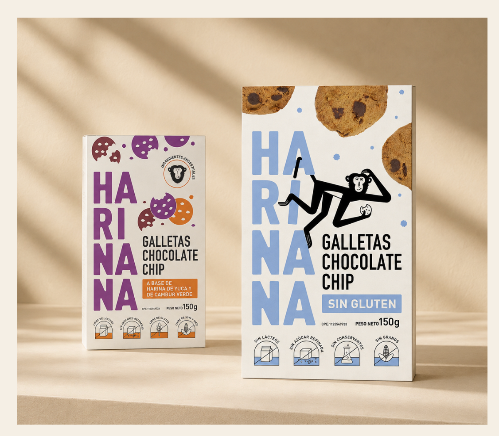
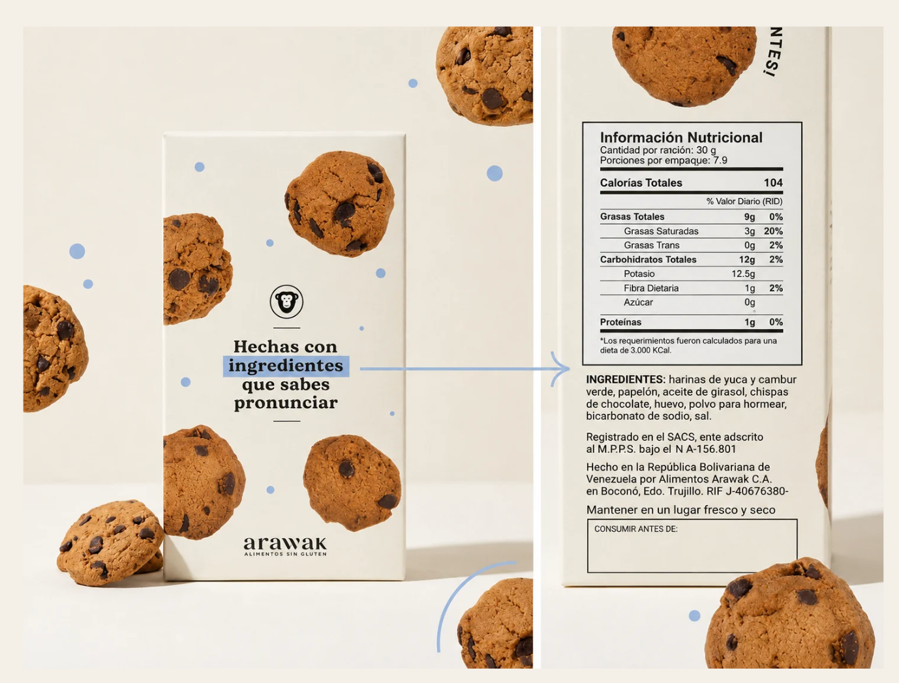

HARINANA
Turning product truth into brand value.
A packaging realignment built around a simple idea: make the product itself prove the promise.


STRATEGY
SHOW THE REAL PRODUCT
Highlight the real cookie and turn its organic appearance into a core part of its value.
MAKE IT FEEL CURRENT
Update the visual system and color palette to make the brand feel more modern and dynamic.
MAKE PEOPLE READ
Guide the shopper to the real differentiator: its ingredients.

FROM CLAIM TO BEHAVIOR
“Hechas con ingredientes que sabes pronunciar.”
The message does not stop at the front of pack. It redirects attention to the ingredient list — turning transparency into an interaction.